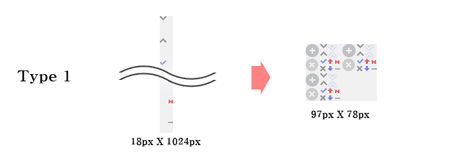
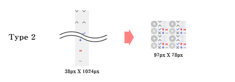
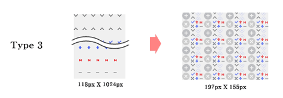

Image Guide
- 이미지 규칙
- 이미지 사용 시 지켜야 할 규칙과 비용 최소화를 위한 방안을 중심으로 설명한다.
이미지 기본 규칙
다음과 같은 기본 이미지 규칙을 준수한다.
이미지 스프라이트
운영성 이미지 성격이 아닌 아이콘 또는 장식을 위한 이미지 요소들은 스프라이트 기법을 활용하여 파일의 Size, Request 최소화를 도모한다.
- 스프라이트는 수직정렬 (vertical)형과 바둑판(tile)형 중 서비스에 따라 선택하여 사용
- 수직 정렬형 스프라이트는 개체 수가 늘어남에 따라 공간 또한 늘어나 용량 이슈가 발생하므로 모바일 환경에서는 바둑판형 스프라이트로 진행한다. (비교표 참조)
- 각 스프라이트 집합은 타이틀, 버튼, 아이콘, 메뉴(GNB 또는 Tab), 숫자 등 용도별로 나누어 그룹핑
| 이미지 | 바둑판 스프라이트 | 수직정렬 스프라이트 |
|---|---|---|
|  | 299KB | 3.15KB |
|  | 2.79KB | 5.07KB |
|  | 3.67KB | 9.58KB |
이미지 타입 선택
| 종류 | PC web | Mobile Web | Mobile App |
|---|---|---|---|
| GIF | 기본 | 사용 가능 | X |
| JPG | 컬러수 많거나 운영성 이미지일 때 | 운영성 이미지일 때 | X |
| PNG-8 | X | 기본 | 반투명효과 없고 컬러가 적을 때 |
| PNG-24 | 반투명효과가 있을 때에만 사용 | 컬러 수 많거나 반투명효과가 있을 때 | 기본 |
| 이미지 스프라이트 | O | O | X |
- PC Web
-
- 기본 포맷은 GIF를 사용한다.
- JPG는 인물이나 실사 이미지와 같이, 색 변화 및 그라데이션이 풍부한 경우 및 운영성 이미지에 주로 사용한다.
- JPG로 저장 시 압축률 관리
- - 일반 저장 시(File->Save): 압축률 10⁄12 이상으로 저장할 것.
- - Save for web 기준: Original 혹은 JPG Quality 90 이상
- 구형브라우저에서의 PNG 이미지 지원
- Mobile Web
-
- 3G망을 이용하는 유저를 고려하여 용량 축소가 중요하다.
- PNG-8 포맷을 기본으로 저장하며, 색상 수가 많거나 반투명 효과가 있으면 PNG-24를 사용한다.
- 용량 대비 이미지 품질을 고려하여 포맷을 변경할 수도 있다.
이미지 스프라이트 가이드
PC Web
- 타이틀 이미지
-
- 수직 정렬형 이미지에서 각 개체의 기본간격은 50px이나, 높이가 크지 않으면 25px 단위로 줄일 수 있다.
- 수직 정렬형은 좌우에 텍스트가 배치되거나 사이즈가 고정이 아니면 적용한다.
- 버튼 이미지
-
- 바둑판형에서 각 개체의 기본간격은 10px 단위로 한다.
- 가로세로 사이즈가 고정일 경우 타일형으로 적용할 수 있다.
- 아이콘 이미지
-
- 좌측에 배치되는 아이콘은 가장 좌측에, 우측으로 배치되는 아이콘은 가장 우측으로 배치한다.
Mobile Web
- 모바일은 최근 출시된 고해상도 기기에 또렷한(crispy) 서비스 제공을 위하여 고해상도 이미지 분기 대응한다.
- 이외 일반 태그, 즉 일반 콘텐츠 이미지(썸네일등)는 기기 해상도별 분기하기가 어려워 @1.5x(480px) 이미지를 기본으로 사용함
- CSS 이미지
-
- 모바일 고해상도 이미지 대응에 따라 디자인 표현을 위한 image 사용 및 image 폰트(text 표현을 위한 image) 사용을 최소화하며, CSS3 ⁄ 시스템 폰트 활용을 높임
- 프로모션 이미지
-
- 프로모션 디자인 권장 형태는 '이미지 + 시스템폰트 혼합형' 임
- 통이미지 프로모션인 경우 이미지 용량에 따라 320 혹은 480 이미지로 대응 함
- 이미지 처리 프로세스
-
- 640 PSD 파일을 기준으로 마크업 진행
- 640 PSD 기준 이미지 sprite 작업 결과물을 480과 320으로 각각 리사이징 하여 사용
- image의 size는 4의 배수 ex) image size 40px * 120px, 600px * 800px..
- Merge 할 psd에 이미지를 배치할 시 20 * 20 그리드에 배치 한다. 단, shadow 효과가 들어간 이미지는 20 * 20 그리드에 배치하는데 이미지가 시작되는 지점은 4 * 4 그리드에 있도록 배치한다. (아래 그림 참고)
이미지 용량 및 크기
PC Web
- 최대 사이즈 : 가로 1024px X 세로 1024px (모바일환경에서 PC 웹에 접속하였을 때, 다운로드된 이미지의 사이즈가 1024px이 넘어갈 때 해당 이미지가 올바르게 표시되지 않으므로 PC 웹에서 가로/세로 사이즈의 제한을 둔다.)
Mobile Web
- CSS image: 스프라이트 된 이미지의 용량이 60KB 를 넘지 않도록 한다.
- promotion image: 스프라이트 된 이미지의 용량이 400KB 를 넘지 않도록 한다.
이미지 품질 관리
JPG로 저장시 압축률
- 압축률 10⁄12 이상으로 저장할 것.(일반저장 시, File->Save (As))
- save for web 기준 original 혹은 JPG Quality 80 이상
PNG로 저장시 이미지 Optimizing Tool을 통해 반드시 압축하여 저장
이미지 최적화
- 이미지 최적화 툴을 이용하여 이미지 압축을 진행한다.
| 이미지 종류 | 파일 사이즈 | 기존 용량(Byte) | Filter 후 | 압축률 |
|---|---|---|---|---|
| logo.png | 320px 이미지 | 867 | 846 | 약 3% |
| ico_all_v1.png | 320px 이미지 | 1,703 | 1,650 | 약 4% |
| ico_service1_v1.png | 320px 이미지 | 5,299 | 4,901 | 약 8% |
| ico_weather_v1.png | 320px 이미지 | 3,832 | 3,523 | 약 9% |
| topbar_v1.png | 320px 이미지 | 337 | 321 | 약 5% |